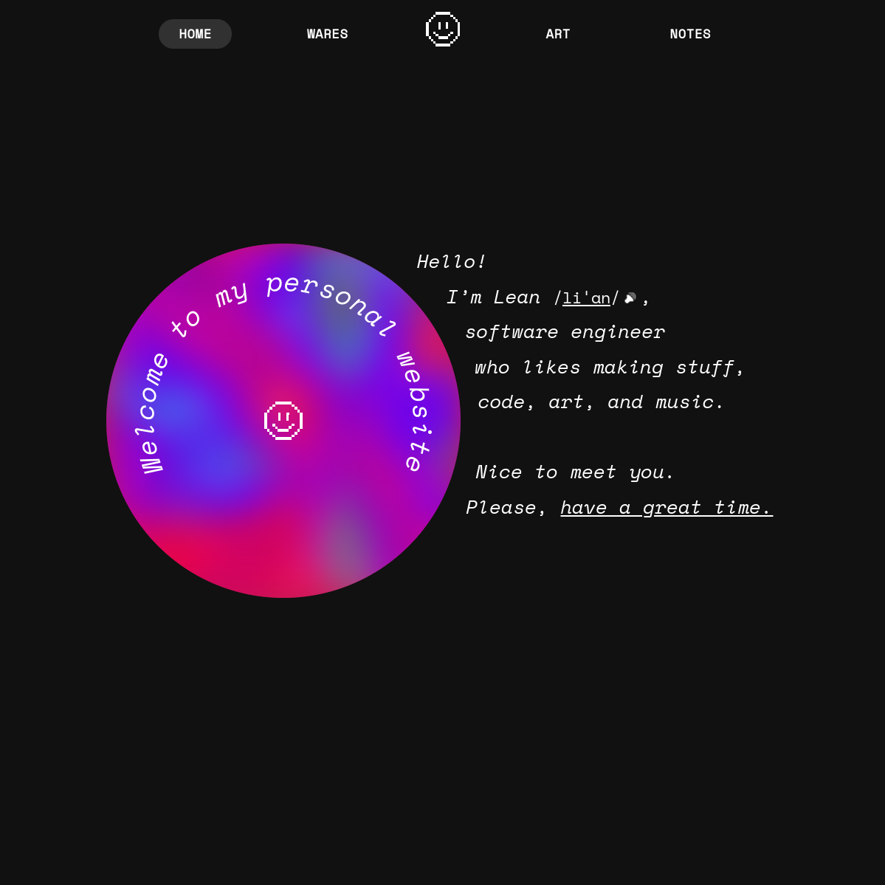
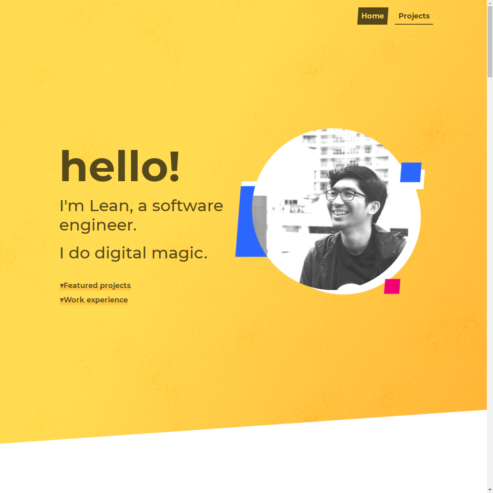
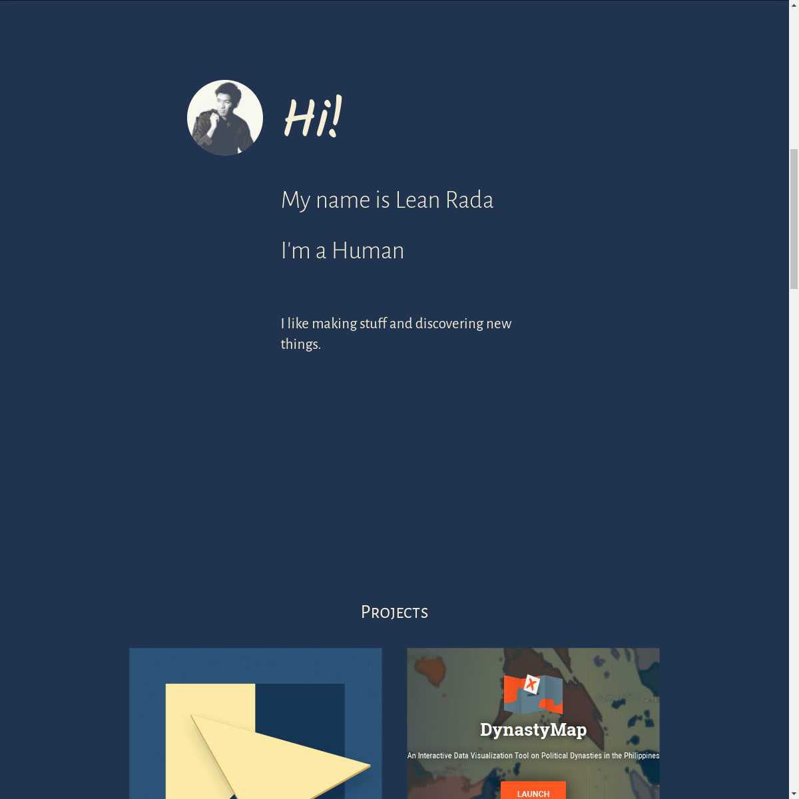
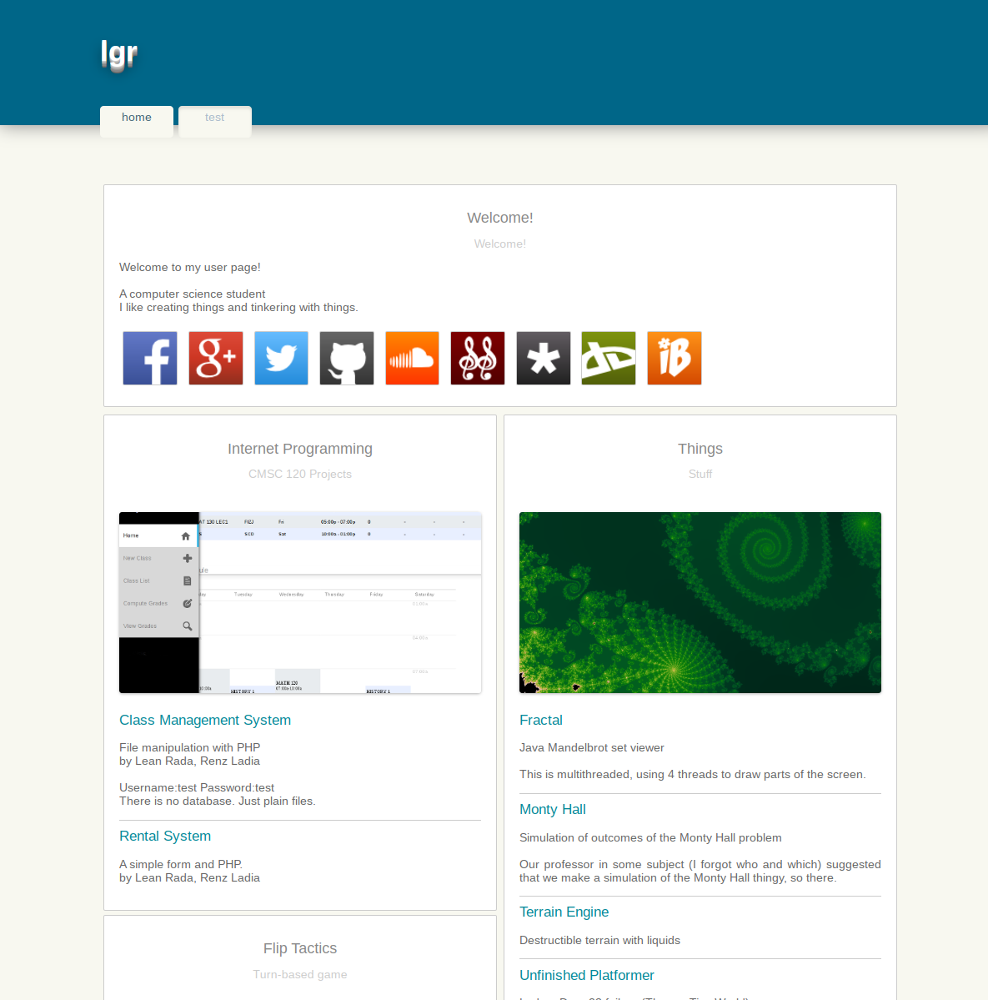

Personal website
My personal website has been up for almost a decade now. Just like me, it has moved from place to place over the years. From a university server to GitHub pages to my own domain. It has also been redesigned multiple times.
I make this site because I want a place on the web. While one could easily set up Facebook profiles, Twitter pages, LinkedIn profiles… those are more like apartments in someone else’s building. You could get zucced, your walls and doors could get renovated (UI redesign), furniture could get removed (dropped features). One might even find that the whole building has been demolished, like Google Plus. Also, ads. Do you want billboards in your home? OK, the analogy’s getting too far. But you get it.
Well, it’s also fun to keep as a hobby.
Enough talk, more show. Let’s take a look at what I could archive of the previous versions.
Version 4 (2023-)
leanrada.com
This 2023 version is the current version as of . This has been the most comprehensive version yet, featuring a blog, project pages, personal stuff, and random pages. I wanted this iteration to be more than a portfolio for professional purposes. I wanted a more personal website.
Update: I rewrote my site in 2025 using vanilla web. Prior to that I was using a static site builder.
compose-html is my own static site builder, which I wouldn’t yet recommend for the public. However, I like owning the framework as I could make my project in whatever form I wanted, and it’s also interesting to make.
There is no frontend UI framework. Plain HTML and JS are good enough. I’m good with my 100 Lighthouse performance score. 😉
It features a nebula / lava lamp thing on the home page (and footer). It’s interactive, in case you didn’t notice. In the code, it’s a component named <nebula> and it’s reusable with customisable palettes! Here it is on its own:
<nebula palette="#ffffff #0000ff #ff0000 #000000" mouse />
This was also the first time I got a domain! It was a choice between Google Domains, Porkbun, and Namecheap. Namecheap was the cheapest domain name registrar I’ve found. As for Google Domains, I don’t know, there’s no guarantee it won’t just get dropped. Porkbun is nice and straightforward, but seems unknown…? I ended up on Namecheap and it was good so far.
Version 3 (2018-2022)
kalabasa.github.io
years ago, this was how my site started to look. During that time, I wanted something more like a portfolio, a more professional thing as I was shopping around for work then. That’s why I had that tagline (*cringe*). And my face. It also had a work experience section, so profesh.
It had a client-side search engine, which was pretty cool for a static site hosted on static GitHub Pages.
What I like about this one is that it had page transitions, made using Barba.js. Any page transition is always a nice delight while browsing the web, in my opinion. So I tried it for my own site.
Take a look at the archived version 3!
Version 2 (2015-2018)
kalabasa.github.io
OK, this was years ago. A minimalist single-page site, containing just a very narrow selection of projects, a timeline of work experience, and links.
It featured an interactive splash screen with some 3D cubes, made with three.js. I think it looked cool.
Take a look at the archived version 2!
Version 1 (2012-2015)
agila.upm.edu.ph/~lgrada
My very first website! I made this during college and hosted it on a university server. There were no build tools, no CIs, and no deployment pipelines. Real webmasters use raw FTP and SSH.
Back then, I did the Ludum Dare 48-hour game jams quite frequently, so this page was filled with the small games that I made.
This was also where I hosted some of the CS projects that needed to be online. Thanks to the server being an actual machine (instead of just a static site), I was able to use databases, file storage, and execute backend logic.
The page featured a Flash-based interactive & animated header (seeing a pattern now?). I don’t know why, but I just love interactive and animated stuff so I put these things in my site. Flash is dead now and no browsers support it, so here’s an HTML5 recreation!
[todo: recreate the header]
Take a look at the archived version 1!
Conclusion
It’s fun to make websites. That’s why I keep remaking my website.
I will update this page if I ever do another site redesign / rewrite!